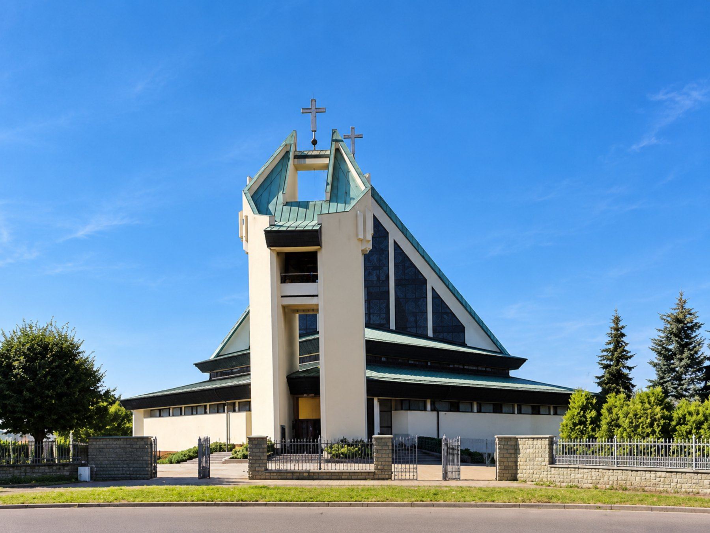

Przykładowy tytuł ogłoszenia parafialnego
Krótki zajawkowy fragment ogłoszenia parafialnego — treść demonstracyjna.
Czytaj więcej
Andrychów · ul. Starowiejska 30
Diecezja bielsko-żywiecka · dekanat andrychowski
Ogłoszenia
Krótki zajawkowy fragment ogłoszenia parafialnego — treść demonstracyjna.
Czytaj więcejOgłoszenia
Treść demonstracyjna — wpisy poniżej są przykładowe.
{{ n.excerpt }}
Czytaj więcejTreść demonstracyjna
{{ newsItem.date }}
{{ newsItem.excerpt }}
Treść demonstracyjna.
Intencje mszalne
Tydzień 31 sierpnia – 6 września 2026 · treść demonstracyjna
| {{ i.time }} | {{ i.text }} |
|---|
Treść demonstracyjna.
Porządek nabożeństw
Wspomnienie dnia — treść demonstracyjna
{{ todayNote }}
| Niedziele | 6:30 · 8:30 · 10:00 · 11:30 · 13:00 · 18:00 |
|---|---|
| Niedziele (lipiec i sierpień) | 6:30 · 8:30 · 10:00 · 11:30 · 20:00 |
| Święta zniesione | 6:30 · 8:30 · 16:30 · 18:00 |
| Dni powszednie | 6:30 · 7:00 · 18:00 |
| Adwent | 6:30 · 18:00 |
| Dni powszednie (lipiec i sierpień) | 6:30 · 18:00 |
Transmisja Mszy Świętej z kościoła parafialnego.
{{ streamMessage }}
Kontakt
Adres e-mail parafii nie został podany do wersji demonstracyjnej.
| Poniedziałek – sobota | 8:00 – 9:00 |
|---|---|
| Wtorek, środa, czwartek | 16:00 – 17:30 |
Kancelaria nieczynna w pierwszy czwartek miesiąca, w niedziele i święta przypadające w tygodniu oraz w dniu spowiedzi parafialnej.
Mapa pochodzi z serwisu zewnętrznego. Kliknij, aby ją załadować — dopiero wtedy Twoje dane trafią do dostawcy mapy.
Kościół znajduje się przy ul. Starowiejskiej, w pobliżu centrum Andrychowa.
Formularz kontaktowy jest w wersji demonstracyjnej wyłączony — wiadomości nie są wysyłane ani zapisywane.
Galeria
Treść demonstracyjna — miejsca na zdjęcia.
Nasi księża
Dane demonstracyjne.
{{ p.contact }}
Kapłani pochodzący z parafii św. Stanisława Biskupa i Męczennika w Andrychowie.
{{ article.kicker }}
{{ article.lead }}
Treść demonstracyjna. Rzeczywiste zasady i wymagania podaje parafia.
{{ para }}
Sprawy formalne załatwiamy w kancelarii parafialnej — godziny otwarcia i kontakt.
Ofiara na kościół
Funkcja demonstracyjna. Płatności nie są obsługiwane, a formularz nie przyjmuje danych.
Numer rachunku parafii nie został podany do wersji demonstracyjnej.
Informacje
Dokument demonstracyjny — wersja produkcyjna wymaga treści zatwierdzonej przez parafię i inspektora ochrony danych diecezji.
Serwis demonstracyjny nie zbiera danych osobowych, nie posiada formularzy przyjmujących zgłoszenia ani systemu płatności. Nie korzysta z narzędzi analitycznych ani reklamowych.
Mapa oraz odtwarzacz transmisji pochodzą z serwisów zewnętrznych i są ładowane wyłącznie po świadomym kliknięciu użytkownika. Do tego momentu żadne zapytania do tych dostawców nie są wysyłane.